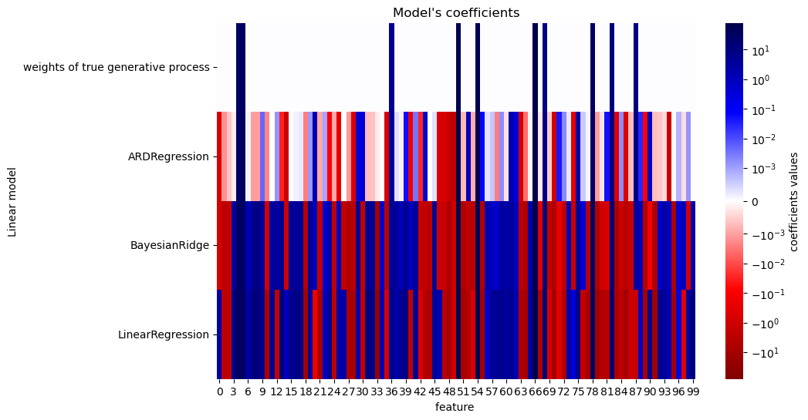
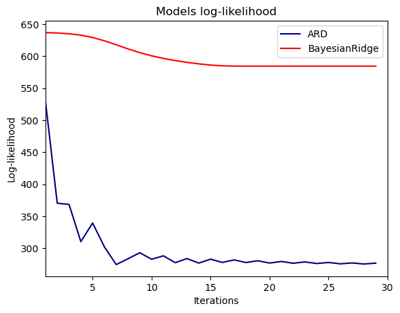
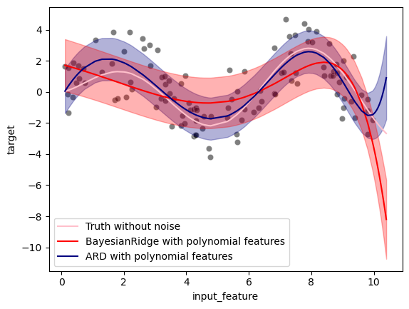

Comparing Linear Bayesian Regressors#
This example compares two bayesian regressors: ARD, BayesianRidge
1. Normal linear#
linear data
Generate synthetic dataset#
from sklearn.datasets import make_regression
X,y, true_weights = make_regression(
n_samples=100,
n_features=100,
n_informative=10, # features generate y. Others unuseful coef = 0
coef=True,
random_state=42 ,# noise
noise=8,
)
---------------------------------------------------------------------------
ModuleNotFoundError Traceback (most recent call last)
Cell In[1], line 1
----> 1 from sklearn.datasets import make_regression
2 X,y, true_weights = make_regression(
3 n_samples=100,
4 n_features=100,
(...)
8 noise=8,
9 )
ModuleNotFoundError: No module named 'sklearn'
Fit#
import pandas as pd
from sklearn.linear_model import ARDRegression, BayesianRidge, LinearRegression
olr = LinearRegression().fit(X,y)
brr = BayesianRidge(compute_score=True, max_iter=30).fit(X,y)
ard = ARDRegression(compute_score=True, max_iter=30).fit(X,y) # socre: liklihood
df = pd.DataFrame(
{
'weights of true generative process' : true_weights,
'ARDRegression':ard.coef_,
'BayesianRidge':brr.coef_,
'LinearRegression':olr.coef_,
}
)
| weights of true generative process | ARDRegression | BayesianRidge | LinearRegression | |
|---|---|---|---|---|
| 0 | 0.000000 | -0.590226 | -0.631933 | 2.360746 |
| 1 | 0.000000 | -0.001504 | -3.250621 | -3.409375 |
| 2 | 0.000000 | -0.000594 | -2.509021 | -2.580928 |
| 3 | 0.000000 | -0.000171 | 2.541967 | 8.836650 |
| 4 | 32.125517 | 33.179873 | 34.489623 | 37.133735 |
| ... | ... | ... | ... | ... |
| 95 | 0.000000 | -0.000064 | -6.270549 | -11.378404 |
| 96 | 0.000000 | 0.000780 | 0.430155 | 0.292874 |
| 97 | 0.000000 | -0.000342 | 1.065423 | -0.389722 |
| 98 | 0.000000 | 0.001329 | -0.771873 | 3.235766 |
| 99 | 0.000000 | -0.000018 | 2.225245 | 12.305449 |
100 rows × 4 columns
plot coefficients#
import matplotlib.pyplot as plt
import seaborn as sns
from matplotlib.colors import SymLogNorm # 对数化降低高低数据
plt.figure(figsize=(10,6))
sns.heatmap(
df.T,
norm = SymLogNorm(linthresh=10e-4, vmin=-80, vmax=80),
cbar_kws={"label":"coefficients values"},
cmap='seismic_r'
)
plt.ylabel('Linear model')
plt.xlabel('feature ')
plt.title("Model's coefficients")
Text(0.5, 1.0, "Model's coefficients")

Due to the noise ,none of the linear models can recover the true weights. Compared the OLS estimator(LinearRegression): ARD get some sparse coef. BayesianRidge have slight changes.
Plot the marginal log-likelihood#
Plot bayesian max-likehihood with iterations.
import numpy as np
ard_scores = -np.array(ard.scores_)
brr_scores = -np.array(brr.scores_)
plt.plot(ard_scores, color="navy", label="ARD")
plt.plot(brr_scores, color="red", label="BayesianRidge")
plt.ylabel("Log-likelihood")
plt.xlabel("Iterations")
plt.xlim(1, 30)
plt.legend()
_ = plt.title("Models log-likelihood")

2. PolynomialFeatures Expandsion.#
Data is linear: $$y = w_0 + w_1 x_1 + w_2 x_2 + \dots + w_n x_n + \epsilon$$ Data is’t linear, we can expand it. Then we empose linear regression. $$y = w_0 + w_1 x + w_2 x^2 + w_3 x^3 + \dots + w_n x^n + \epsilon$$
Generate synthetic dataset#
Now we create a non-linear function of the input feature.
from sklearn.preprocessing import PolynomialFeatures,StandardScaler
n_samples = 110
rng = np.random.RandomState(0)
X = np.sort(-10 * rng.rand(n_samples) + 10) # 0, 10
noise = rng.normal(0,1,n_samples)*1.35 # Suite 假设
y = np.sqrt(X) * np.sin(X) + noise
full_data = pd.DataFrame({
'input_feature':X,
'target':y
})
print(X.shape, y.shape)
(110,) (110,)
X = X.reshape((-1, 1)) # 转为列向量
X.shape
(110, 1)
X_plot = np.linspace(10, 10.4, 10) # test
y_plot = np.sqrt(X_plot)*np.sin(X_plot) # true without noise
X_plot = np.concatenate((X, X_plot.reshape((-1, 1))))# draw
y_plot = np.concatenate((y - noise, y_plot)) # draw without noise
FIT#
fit_intercept = True is default in ARD and BayesianRidge, but PolynomialFeatures should’t introduce bias.
return_std = True , bayesian regressors return the std. of posteiror distribution.
from sklearn.pipeline import make_pipeline
ard_poly = make_pipeline(
PolynomialFeatures(degree=10, include_bias=False),
StandardScaler(),
ARDRegression()
).fit(X,y)
brr_poly = make_pipeline(
PolynomialFeatures(degree=10, include_bias=False),
StandardScaler(),
BayesianRidge()
).fit(X,y)
y_ard, y_ard_std = ard_poly.predict(X_plot,return_std = True)
y_brr, y_brr_std = brr_poly.predict(X_plot,return_std = True)
Plot polynomial regressions with std. errorbar#
ax = sns.scatterplot(
data=full_data, # real data with noise
x='input_feature',
y='target',
color='black',
alpha=0.5
)
ax.plot(X_plot,y_plot, color='pink', label ='Truth without noise')
ax.plot(X_plot, y_brr, color='red', label = 'BayesianRidge with polynomial features')
ax.plot(X_plot, y_ard, color='navy', label='ARD with polynomial features')
# error bar
ax.fill_between(
X_plot.ravel(),
y_ard-y_ard_std,
y_ard+y_ard_std,
alpha=0.3,
color='navy'
)
ax.fill_between(
X_plot.ravel(),
y_brr-y_brr_std,
y_brr+y_brr_std,
alpha=0.3,
color='red'
)
ax.legend()
<matplotlib.legend.Legend at 0x2eadb694da0>

📈 Due to the intrinsic limitations of a polynomial regression, models fail when extraploatin(for test data).